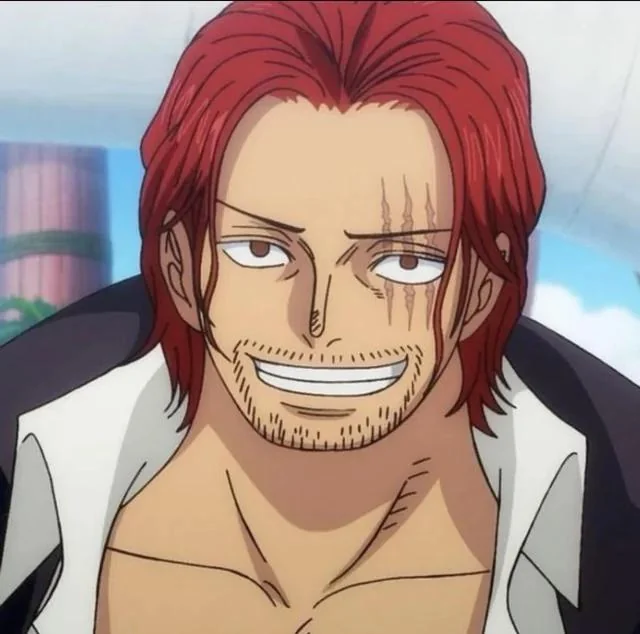
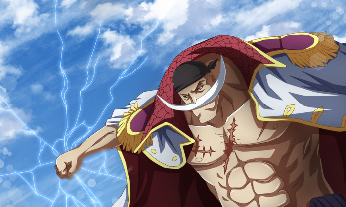
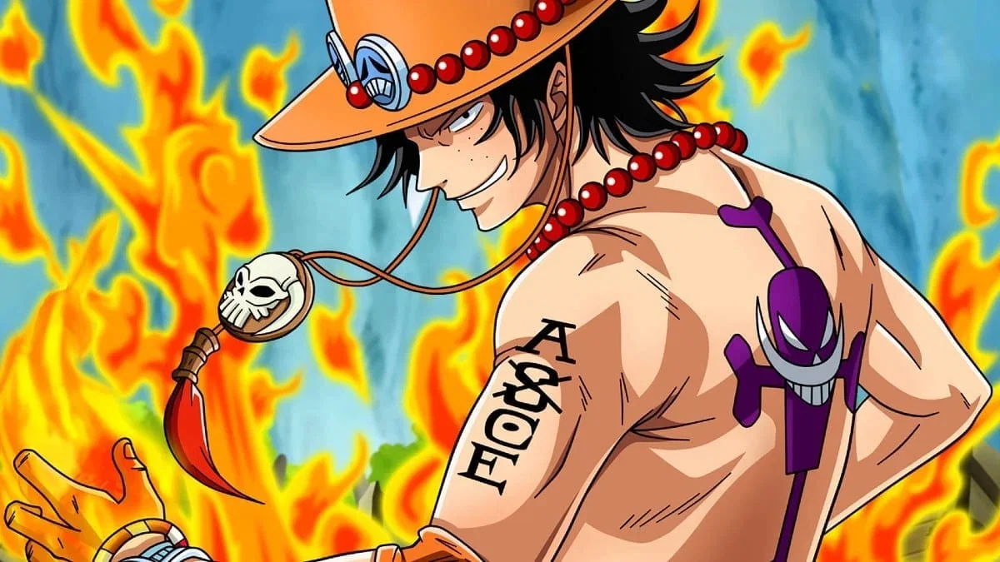
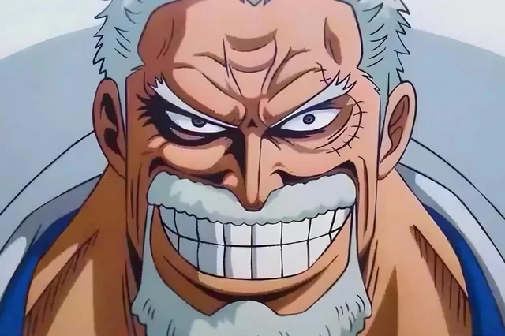
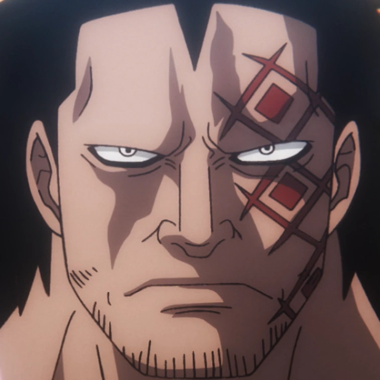
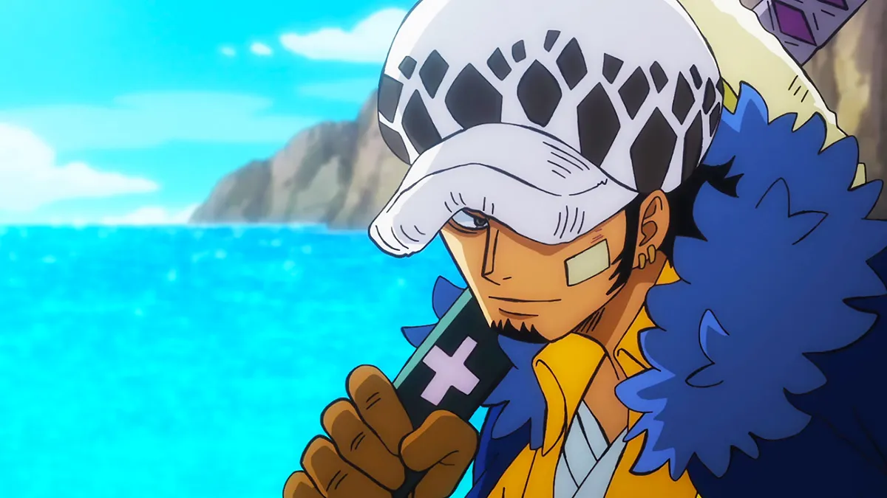

Shanks le Roux
EmpereurC'est lui qui a donné son chapeau de paille à Luffy et éveillé en lui le rêve de devenir pirate. L'un des quatre Empereurs des mers.
- ÉquipagePirates aux Cheveux Roux
- Prime4 048 900 000 B
L'Encyclopédie des Pirates

C'est lui qui a donné son chapeau de paille à Luffy et éveillé en lui le rêve de devenir pirate. L'un des quatre Empereurs des mers.

Surnommé "l'homme le plus fort du monde", Barbe Blanche considérait Ace comme son fils. Sa mort à Marineford a marqué un tournant dans la série.

Fils de Gol D. Roger et frère adoptif de Luffy, Ace était le commandant du 2e bataillon de Barbe Blanche. Il maîtrisait le Mera Mera.

Vice-amiral légendaire de la Marine et grand-père de Luffy. Il a affronté Gold Roger à de nombreuses reprises et élevé Luffy à Fuschia.

Chef de l'Armée Révolutionnaire et homme le plus recherché du monde. Son objectif est de renverser le Gouvernement Mondial.

Capitaine des Pirates du Cœur et allié de Luffy depuis Punk Hazard. Il maîtrise le Fruit Ope Ope qui lui permet de créer des "salles" d'opération.